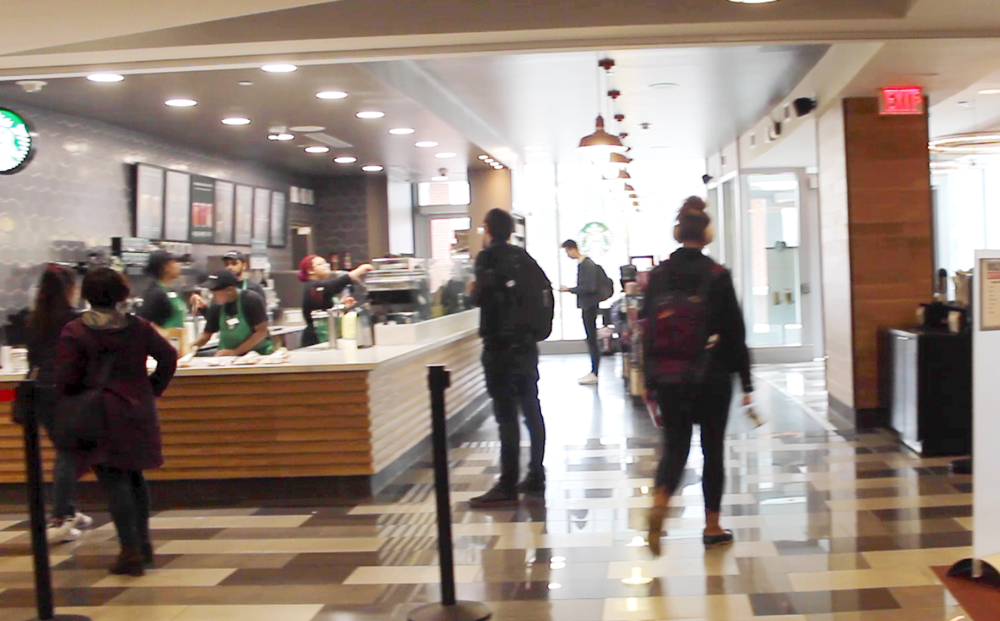

WORK
Many individuals at Talley are employees. These include students such as those working in food service, the information desk, reservations, and the bookstore. There are also non-students who work to maintain the space or oversee operations at Talley.
STUDY
Out of all the activities that were observed at Talley, the majority of students were seen engaged in the activity of studying. There are many study groups that can be seen throughout the building, and many people also study alone.
SOCIALIZE
People can be seen socializing here, and usually when doing so it is centered around an activity such as eating or studying. When they are not centered around these activities, they are typically sitting on any soft seating without tables.
MEETINGS
Talley is a space for meetings, both formal and informal. Formal meetings include those related to work and extracurriculars, which take place in the conference rooms or a designated area for the student organization. Informal meetings such as meeting up for social activities and eating also occur here.
CHILL
Some people come here to relax. A few we interviewed were using Talley as a place to stay and wait for the time being before going elsewhere for other activities. Some observed students we have also seen were using their devices for entertainment purposes.
EAT
Since Talley has many food options available, people can often be seen with food from the food court or drinks from the Starbucks or Port City Java. During lunch hours, Talley is especially busy as many people are grabbing food to eat.
EVENTS
A variety of events are held at Talley, such as career fairs, performances, talks and much more. On the second floor, there are also organizations at the tables having fundraisers or trying to attract students for certain purposes.